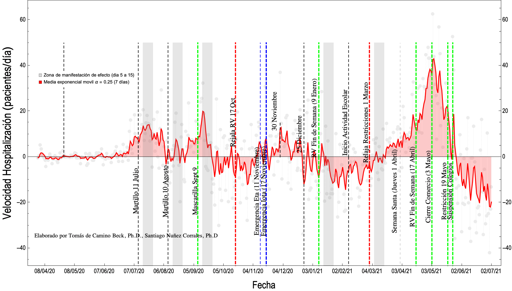
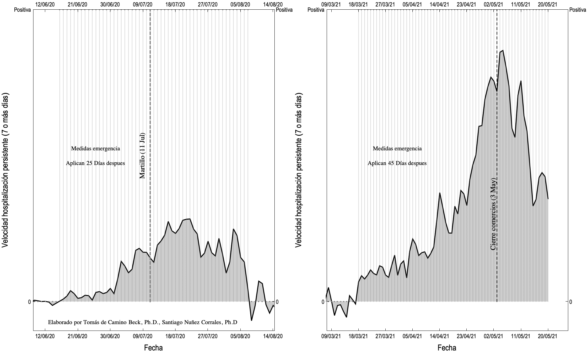
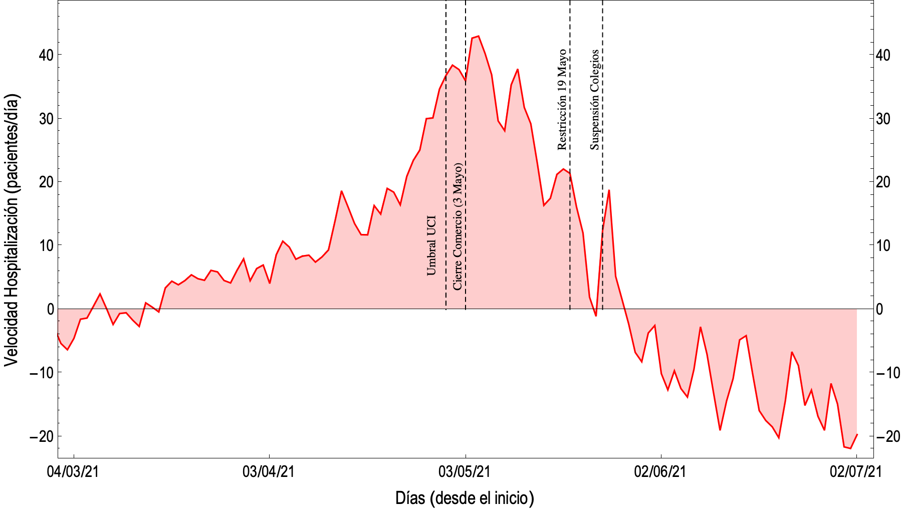
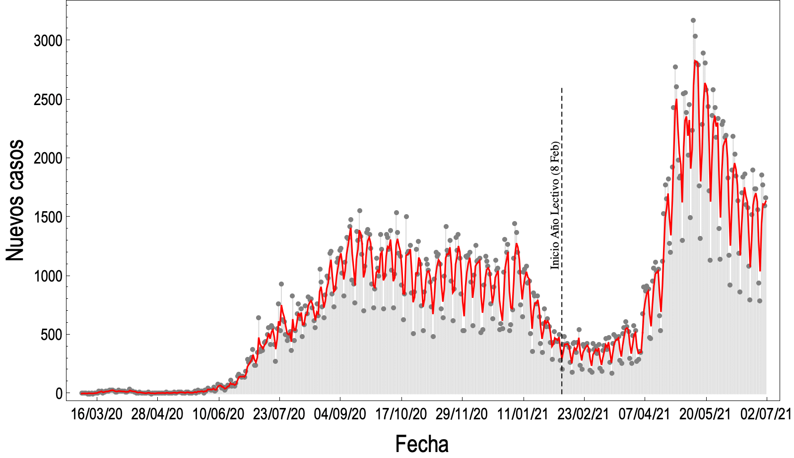
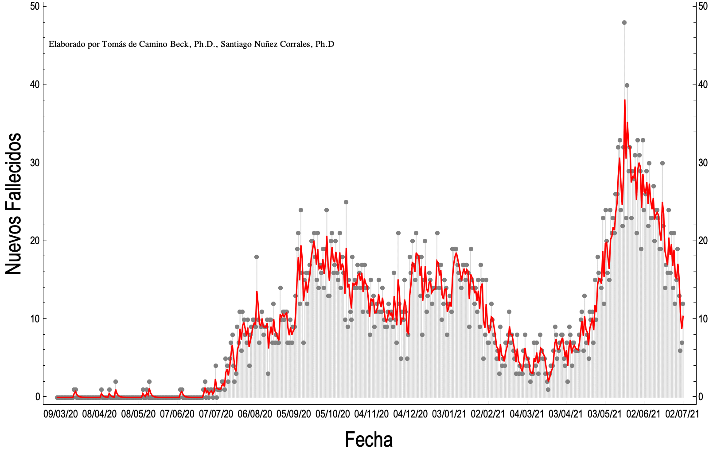
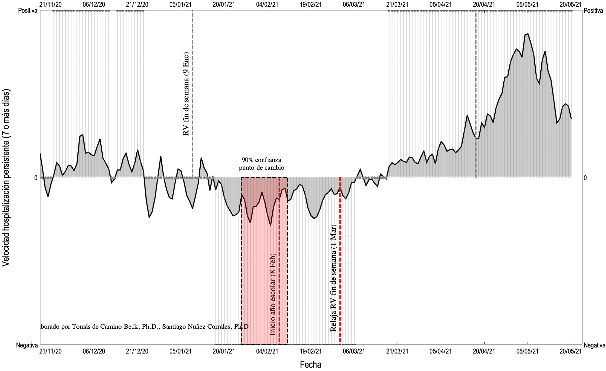

Situación COVID Costa Rica
17 Mayo 2021
Tomás de-Camino-Beck, Ph.D., Santiago Nuñez-Corrales Ph.D.
Ciudadanos Investigadores Indepedientes
Introducción
- Este análisis se provee en tiempo real, para dar una posible interpretación de la infromación.
- En ciencia, es normal que existan otras posibles interpretaciones que deban ser discutidas o comprobadas, en ciencias factuales la "verdad" resulta de un proceso progresivo de evidencia en favor o en contra de alguna hipótesis.
- Nuestras explicaciones representan posibles hipótesis que se funamentan en el análisis de datos.
- Los gráficos y su interpretación se actualizan diariamente
Velocidades de Hospitalización
Este análisis se basa principalmete en monitorear la velocidad de hospitalización, que define como el promedio de pacientes que entran o salen en un día del hospital (primera derivada numérica de la ocupación hospitalaria diaria). En la siguiente figura se explica:
Gráfico de Hospitalizaciones

Gráfico de velocidad de hopitalización histórico

En el gráfico lo que se observa son las velocidades de hiospitalización. Las olas epidémicas se muestran con una persistencia larga (de más de una semana) de velocidades de hospitalización positivas (sin ninguna observación de velocidad negativa). Hay una diferencia cunatitaiva y cualitativa considerable entre la primera ola que inicia en Junio del 2020, y la que inicia en marzo de 2021, como se observa en la siguiente figura comparativa,

Las velocidades esta segunda ola epidémica, comienzan a mostrar persistencia positiva el 18 de Marzo de 2021, y se han mantenido velocidades positicvas de hospitalición por ya dos meses de forma consistente.
Gráfico de velocidad de hospitalización últimos 4 meses
Detalle de la velocidad de hospitalización en los últimos 4 meses. Es notorio que la velocidad de hospitalización parece comenzar a disminuir. La razón de la disminución se puede deber a dos factores: 1. Posible efecto de las medidas tomadas el 3 de Mayo, y 2. Que la saturación hospitalaria tiene como resultado un registro lñimite en las hospitalizaciones, dando la impresión de estabilización.

Interpretación de Gráficos y Resultados
17 Mayo 2021
- Las velocidades de hsopitalización ya no están creciendo de forma acelerada, pero siquen siendo positivas
- La desaceleración puede deberse a efecto de cierre de comercio. Si es este el caso es de esperar que estas vuelvan a subir
- Otro efecto de la desaceleración puede ser la saturación de UCI. A partir del 28 de Abril se observó la saturación y en ese momento se observan cambios en la velocidad.
R efectivo
El R efectivo lo calculamos utilizando la fórmula del Centro Centroamericano de Poblacion. El R efectivo es una aproximación de lo que se conoce como tasa de contagio, perimte saber, retrospectivamente cual ha sido el proceso de contagio en la población. UN R efectivo mayor que 1 indica crecimiento, y menor que 1 decrecimiento de contagios.

Interpretación de Gráficos y Resultados
- R efectivo es poco sensible si los datos de nuevos casos no representan un muestreo poblacional
- La tendencia general de R efectivo ha sido la de subir a partir del inicio de clases y se ha mantenido en promedio por arriba de 1.
-Las oscilaciones de R fefecfivo, se deben a el efecto de “fines de semana” donde un numero menor de peronas espera a un día de semana para ir a un centro médico, si tiene sospechas de estar contagiado.
Gráficos Descriptivos
Nuevos Casos

Positividad

Fallecimientos Diarios

Evidencia de Efecto de Año Lectivo
Utilizando análisis multiresolución de ondeletas (metodología explicada acá), encontramos evidencia estadistica de que el inicio de la ola epidémica, se asocia al inicio del período escolar. Ver el siguiente gráfico,

Como se observa en el gráfico, con un 90% de confianza entontramos una “zona” donde se encuentra uno o varios factores que se relacionan con el inicio de la ola (una aceleración de velocidades de hospitlaización). Aunque no se puede concluir que es el único factor, pues existen otros factores como estacionalidad, variantes de COVID, etc. tampoco se puede descartar como un factor que influyó en la ola.
Movilidad Según Google Mobility
Este gráfico se actualiza a medida que Google Mobility publique los datos (cada semana aproximadamente). El gráfico muestra los datos para Costa Rica, de movilidad basada en la utilización de serviucios de google en teléfonos. Los datos Google los publica a nivel nacional y no de cantón o distrito.

Actualizado al 14 de Mayo del 2021
Interpretación de Gráficos y Resultados
14 mayo 2021
- El cierre de comercios del 3 Mayo utvo un impacto importante en la movilidad relacionada al comercio, sin embargo no alcanzó los niveles de reducción de movilidad que se tuvieron debido al martillo de Julio o Agosto.
- El fin de semana 8 y 9 de Mayo hubo una reducción importante en la movilidad
Datos
Los datos para el análisis se obtienen diariamente (entre semana) de la base de datos pública del ministerio de salud de Costa Rica.
https://geovision.uned.ac.cr/oges/
Referencias